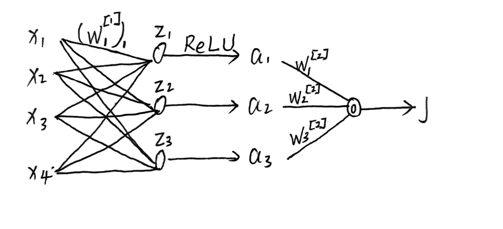

深度学习初识
反向传播
我们将考虑一个通用输入 x，并计算 hθ(x) 关于 θ 的梯度。为简便起见，我们用 o 作为 hθ(x) 的简写（o 代表 output，即输出）。为简便起见，虽然有滥用符号之嫌，我们使用 $J = \frac{1}{2} (y - o)^2$ 来表示损失函数。（注意：这覆盖了 7.1 节中将 J 定义为总损失的设定。）我们的目标是计算 J 关于参数 θ 的导数。 ## 单个神经元的反向传播
先假设x和w都是简单的标量。我们有如下：
$x \xrightarrow{w, b} z \rightarrow o \rightarrow J$
前向公式：
z = w ⋅ x + b o = ReLU(z) $J = \frac{1}{2}(y - o)^2$
求导 (链式法则)： $$ \frac{\partial J}{\partial w} = \underbrace{\frac{\partial J}{\partial o}}_{(o-y)} \cdot \underbrace{\frac{\partial o}{\partial z}}_{\text{ReLU}'(z)} \cdot \underbrace{\frac{\partial z}{\partial w}}_{x}$$结果：$\frac{\partial J}{\partial w} = (o - y) \cdot \text{ReLU}'(z) \cdot x$
向量化： 1
2
3
4
5
6
7
8
9
10
11
12
13
14
15
16
17
18
19
20
21
22
23
24
25
26
27
28
29
30
31
32
33
34
35
36
37
38
39
40graph LR
%% 样式定义
classDef input fill:#e1f5fe,stroke:#01579b,stroke-width:2px;
classDef weight fill:#fff9c4,stroke:#fbc02d,stroke-width:2px;
classDef neuron fill:#e8f5e9,stroke:#2e7d32,stroke-width:2px;
classDef loss fill:#fce4ec,stroke:#880e4f,stroke-width:2px;
subgraph Vectorization_Input [向量化输入 x]
direction TB
x1((x1)):::input
x2((x2)):::input
x3((x3)):::input
x4((x4)):::input
end
subgraph Weights [权重 w]
w1[w1]:::weight
w2[w2]:::weight
w3[w3]:::weight
w4[w4]:::weight
end
subgraph Processing [计算过程]
z((z = wT*x + b)):::neuron
o((o = ReLU)):::neuron
end
J[Loss J = 1/2y-o^2]:::loss
%% 连接
x1 --> w1 --> z
x2 --> w2 --> z
x3 --> w3 --> z
x4 --> w4 --> z
z --> o --> J
%% 备注：这里对应你手稿中的公式
%% z = w^T * x + b
%% J对w的导数 = (o-y) * ReLU'(z) * x
维度定义：x⃗ = [x1, x2, x3, x4]T (4维列向量)w⃗ = [w1, w2, w3, w4]T (4维列向量)前向公式：z = w⃗Tx⃗ + b (结果是标量)
梯度结果：$\frac{\partial J}{\partial \vec{w}}$ 的结果必须和 w⃗ 的形状一致（也是 4维列向量）。$$ \frac{\partial J}{\partial \vec{w}} = \underbrace{(o - y) \cdot \text{ReLU}'(z)}_{\text{标量系数}} \cdot \underbrace{\vec{x}}_{\text{向量}}$$
两层神经网络
现在考虑一个两层神经网络： w[2]表示这是第二层的权重，wj[1]表示第一层中第j个神经元的权重。 我们将使用 (w[2])ℓ 来表示向量 w[2] 的第 ℓ 个坐标分量，用 (wj[1])ℓ 来表示向量 wj[1] 的第 ℓ 个坐标分量。

假设有m个隐藏神经元 对于所有的 j ∈ [1, ..., m]：zj = (wj[1])Tx + bj[1] 其中 wj[1] ∈ ℝd, bj[1] ∈ ℝaj = ReLU(zj), a = [a1, ..., am]T ∈ ℝmo = (w[2])Ta + b[2] 其中 w[2] ∈ ℝm, b[2] ∈ ℝ$$J = \frac{1}{2} (y - o)^2 $$通过调用链式法则，以 J 为输出变量，o 为中间变量，(w[2])ℓ 为输入变量，我们有：$$\frac{\partial J}{\partial (w^{[2]})_\ell} = \frac{\partial J}{\partial o} \frac{\partial o}{\partial (w^{[2]})_\ell} = (o - y) \frac{\partial o}{\partial (w^{[2]})_\ell} = (o - y) a_\ell$$
计算 $\frac{\partial J}{\partial (w^{[1]}_j)_\ell}$ 则更有挑战性。为了计算它，我们首先调用链式法则，以 J 为输出变量，zj 为中间变量，(wj[1])ℓ 为输入变量：$$\frac{\partial J}{\partial (w^{[1]}_j)_\ell} = \frac{\partial J}{\partial z_j} \cdot \frac{\partial z_j}{\partial (w^{[1]}_j)_\ell} = \frac{\partial J}{\partial z_j} \cdot x_\ell$$（因为 $\frac{\partial z_j}{\partial (w^{[1]}_j)_\ell} = x_\ell$。）因此，只需计算 $\frac{\partial J}{\partial z_j}$ 即可。我们再次调用链式法则，以 J 为输出变量，aj 为中间变量，zj 为输入变量：$$\frac{\partial J}{\partial z_j} = \frac{\partial J}{\partial a_j} \frac{\partial a_j}{\partial z_j} = \frac{\partial J}{\partial a_j} \text{ReLU}'(z_j)$$现在只需计算 $\frac{\partial J}{\partial a_j}$，我们再次调用链式法则，以 J 为输出变量，o 为中间变量，aj 为输入变量：$$\frac{\partial J}{\partial a_j} = \frac{\partial J}{\partial o} \frac{\partial o}{\partial a_j} = (o - y) \cdot (w^{[2]})_j$$现在结合上面的方程，我们得到：$$\frac{\partial J}{\partial (w^{[1]}_j)_\ell} = (o - y) \cdot (w^{[2]})_j \cdot \text{ReLU}'(z_j) \cdot x_\ell$$
算法 ：双层神经网络的反向传播前向传播： - 按照神经网络的定义，计算 z1, ..., zm, a1, ..., am 和 o 的值。 - 计算输出层梯度：计算 $\frac{\partial J}{\partial o} = (o - y)$。 - 计算隐藏层梯度（反向传播核心）：对于 j = 1, ..., m，通过以下公式计算 $\frac{\partial J}{\partial z_j}$：$$\frac{\partial J}{\partial z_j} = \frac{\partial J}{\partial o} \frac{\partial o}{\partial a_j} \frac{\partial a_j}{\partial z_j} = \frac{\partial J}{\partial o} \cdot (w^{[2]})_j \cdot \text{ReLU}'(z_j) $$ - 计算参数梯度：通过以下公式计算 $\frac{\partial J}{\partial (w^{[1]}_j)_\ell}, \frac{\partial J}{\partial b^{[1]}_j}, \frac{\partial J}{\partial (w^{[2]})_j}, \frac{\partial J}{\partial b^{[2]}}$：$$\frac{\partial J}{\partial (w^{[1]}_j)_\ell} = \frac{\partial J}{\partial z_j} \cdot \frac{\partial z_j}{\partial (w^{[1]}_j)_\ell} = \frac{\partial J}{\partial z_j} \cdot x_\ell$$$$\frac{\partial J}{\partial b^{[1]}_j} = \frac{\partial J}{\partial z_j} \cdot \frac{\partial z_j}{\partial b^{[1]}_j} = \frac{\partial J}{\partial z_j}$$$$\frac{\partial J}{\partial (w^{[2]})_j} = \frac{\partial J}{\partial o} \frac{\partial o}{\partial (w^{[2]})_j} = \frac{\partial J}{\partial o} \cdot a_j$$$$\frac{\partial J}{\partial b^{[2]}} = \frac{\partial J}{\partial o} \frac{\partial o}{\partial b^{[2]}} = \frac{\partial J}{\partial o}$$
- 为什么原来的复杂度是 O(N2)？ 文中的 N（或 p）指的是网络中参数的总数（权重 w 和偏置 b 的总和）。假设你的网络有 N = 1000 个参数。你想知道每一个参数对最终 Loss (J) 的影响（即求 1000 个导数）。 朴素做法（Naive Approach）：如果你不懂链式法则的“反向”传递，你只能针对每一个参数，单独跑一遍“影响链路”。逻辑：想求参数 w1 的导数：你需要算出从 w1 到 z 到 o 再到 J 的整条链路。这需要遍历网络的一部分，耗时约为 O(N)。想求参数 w2 的导数：你重新算出从 w2 到 z 到 o 再到 J 的整条链路。耗时又是 O(N)。…想求参数 w1000 的导数：你再次重新算一遍。耗时 O(N)。总账：总时间 = 参数个数 × 每次计算单条链路的时间 = N × O(N) = O(N2)致命弱点：你会发现，从隐藏层 z 到输出 J 的这一段路（即 $\frac{\partial J}{\partial z}$），被重复计算了 1000 次！这就是巨大的浪费。
- 它是怎么降低到 O(N) 的？（聪明办法：共享计算）反向传播（Backpropagation）的核心发现是：所有的参数都共享同一个“后半段链路”。根据文中提到的公式：$$\frac{\partial J}{\partial (w^{[1]}_j)_\ell} = \underbrace{\frac{\partial J}{\partial z_j}}_{\text{共享项}} \cdot \underbrace{\frac{\partial z_j}{\partial (w^{[1]}_j)_\ell}}_{\text{独有项}}$$第一步（一次性计算共享项）：我们先算好“总误差 J 对隐藏层 zj 的导数”（即 $\delta_j = \frac{\partial J}{\partial z_j}$）。这一步只需要从 J 往回走到 z，遍历一次网络。耗时：O(N)。关键点：算完后，把这个结果存起来（Cache）。第二步（分发）：现在要算那 1000 个参数的导数。对于 w1：直接拿存好的 δ 乘以 w1 对应的输入 x1。这是一次乘法，O(1)。对于 w2：直接拿存好的 δ 乘以 w2 对应的输入 x2。这是一次乘法，O(1)。…对于 w1000：一次乘法，O(1)。总账：总时间 = 计算共享项的时间(反向一次) + 所有参数做乘法的时间 = O(N) + (N × O(1)) = O(N)
带有向量化的两层神经网络
扩展到多层神经网络
算法 ：多层神经网络的反向传播 - 前向传播： 对于 k = 1, …, r − 1，计算并存储 a[k] 和 z[k] 的值，以及 J。这通常被称为“前向传播”（forward pass）。 - 计算输出层误差：计算 $\delta^{[r]} = \frac{\partial J}{\partial z^{[r]}} = (z^{[r]} - o)$。（注：原文此处 o 应指 y 或目标值，根据上下文，z[r] 即为输出）。 - 反向循环：对于 k = r − 1 到 1 做： - 计算隐藏层误差：$$\delta^{[k]} = \frac{\partial J}{\partial z^{[k]}} = (W^{[k+1]T}\delta^{[k+1]}) \odot \text{ReLU}'(z^{[k]})$$ - 计算梯度：$$\frac{\partial J}{\partial W^{[k+1]}} = \delta^{[k+1]}a^{[k]T}$$$$\frac{\partial J}{\partial b^{[k+1]}} = \delta^{[k+1]}$$